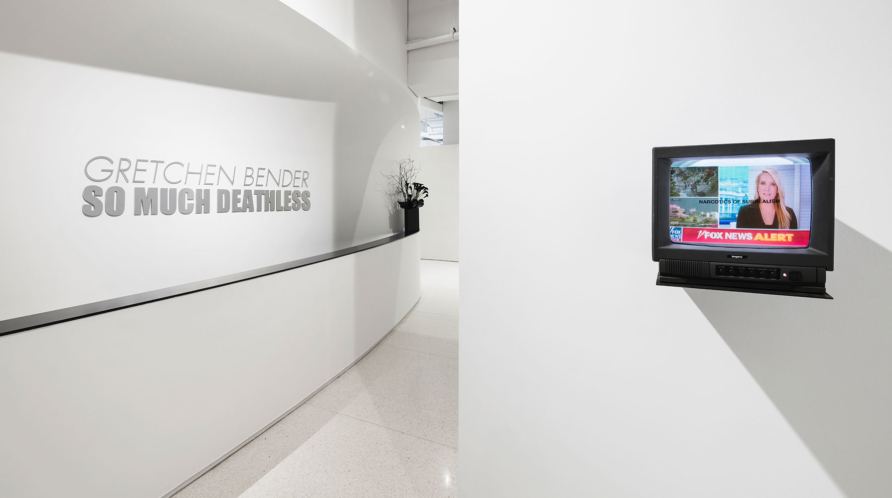
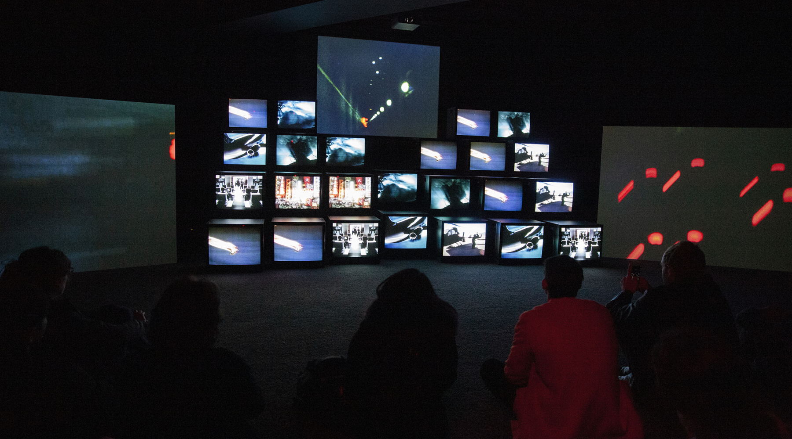
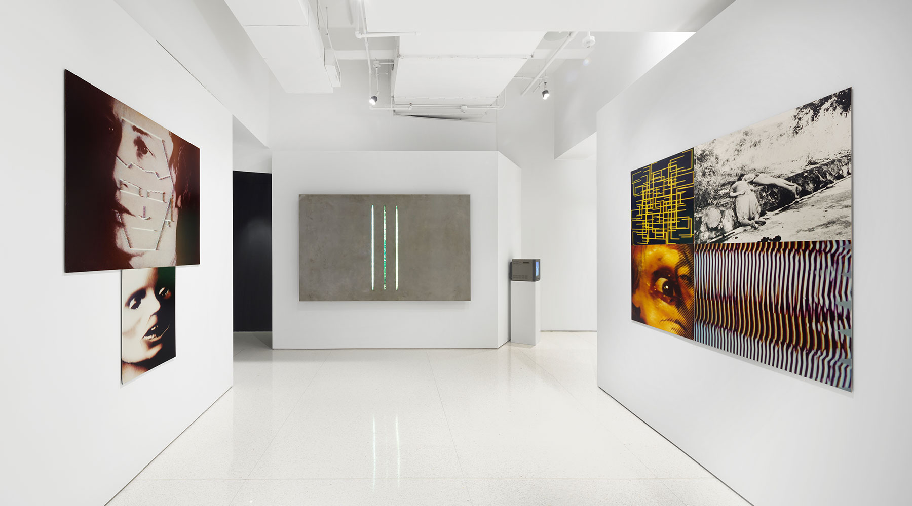

Gretchen Bender: So Much Deathless
Red Bull Arts New York, Associate Curator & Head of Public Programs
March 6 – July 28, 2019
Red Bull Arts New York, Associate Curator & Head of Public Programs
March 6 – July 28, 2019
Red Bull Arts New York is proud to present Gretchen Bender: So Much Deathless, the first posthumous retrospective of the life and work of the influential, multi-disciplinary artist. Opening to the public on March 6, 2019, and remaining on view until July 28, the ambitious exhibition returns the spotlight to one of contemporary art’s most prescient figures, detailing her historic importance and contemporary relevance.
image caption: photo courtesy of tk tk tk.
“Gretchen Bender was one of the most radical, and perhaps the least known, artists of her generation. Her engagements with moving images, the technologies of television, digital graphics, and other popular formats remain urgent and fresh, yet contemporary viewers have only had rare opportunities to see her works installed,” says Cay Sophie Rabinowitz, Representative of the Gretchen Bender Estate. “This retrospective, the first in nearly thirty years, presents Bender’s oeuvre as a whole. In particular the study and inclusion of archival material, and the careful restoration of certain media components have been vital to making this exhibition of Gretchen Bender’s work an exemplary accomplishment.”

image caption: photo courtesy of tk tk tk.

image caption: photo courtesy of tk tk tk.

image caption: photo courtesy of tk tk tk.
Public programs include an excerpt and reprisal of Bill T. Jones / Arnie Zane Company’s canonical work, Still/Here (1994), a performance which featured a video score and set design by Bender. On occasion of the piece’s 25th anniversary, Still/Here will be co-presented with New York Live Arts. Red Bull Arts New York will also present a live score of Bender’s largest work of “electronic theatre,” Total Recall (1987), performed by the original composer Stuart Argabright. Additional programs include exhibition tours, artist talks, film and video screenings, and collaborations with The New York Public Library for the Performing Arts.